OUM |
Technique Overview |
||
Method Navigation |
Current Page Navigation |
||
|
|
||||||||
The purpose of this technique is to assist in adopting instrumentation for the purpose of monitoring and management of the engineering processes.
Engineering is a core discipline within most Information Technology (IT) organizations, and in many instances, instrumentation is already being utilized to collect data on some aspects of the engineering processes. Traditionally, techniques for applying instrumentation against the engineering processes have centered on overall project delivery lifecycle activities, including delivery timeframes, level of effort, and defect tracking.
Engineering, within an IT strategy utilizing a service-oriented architecture (SOA), requires an additional level of discipline with respect to the engineering processes. This is necessary because engineering within a SOA should be considered as finer grained. That is, applications and projects are constructed with service-orientation in mind, which means that reuse and strategic service opportunities are identified during the analysis phase. With this approach, portions of a project or application may be realized by using existing shared services, or carved out for the purpose of creating additional services. Services are then engineered specifically for reuse among a larger audience of consumers, and potentially providing a higher level of strategic importance with respect to business objectives.
When executed correctly, this strategy should lead to a more responsive and efficient software factory. However, because of the decreased granularity and increased demand for discipline, more oversight, monitoring and management is necessary in order to achieve optimal results.
Instrumentation, therefore, should be considered as a fundamental component of the engineering processes of a service-oriented architecture to accomplish a few key goals:
From a planning perspective, there are two primary activities that must take place with respect to adopting instrumentation for the purpose of monitoring and management of the engineering processes.
The first activity is the identification of the data that will be collected during the execution of the engineering processes. This data is considered to be instrumented, as it is specifically collected for the purpose of defining metrics that will assist in improved monitoring and management over the engineering processes. During this activity, it is important to precisely define what data will be collected from each process, in addition to defining the relationship among related instrumentation entities.
The second activity acts on the raw, instrumented, engineering data and defines metrics through aggregation and data analysis. Each metric has a specific purpose and set of guidelines for interpretation. The metrics are used to both monitor the engineering processes to ensure consistency and overall procedural effectiveness, as well as provide guidance from a management perspective as to where improvements in the processes may be needed.
OUM with the SOA Engineering Planning View provides a fine-grained set of engineering processes for delivering projects and applications within a service-oriented architecture. This document provides a foundation for defining the conceptual data set to be collected through instrumenting any engineering framework based on these processes. The conceptual data is then applied in the definition of several key metrics which may be utilized to monitor and manage the adopted engineering framework.
If you are not yet familiar with the service engineering processes as described in OUM, you should review the material in the SOA in OUM views prior to proceeding with this document.
When the service engineering process in OUM is examined from a high-level, the following logical artifacts identify themselves:
These conceptual data entities and their relationships are depicted below:
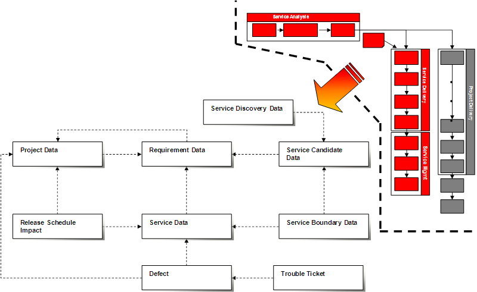
Engineering Instrumentation - Conceptual Relationships
The relationships are defined as follows:
Note: It is important to reiterate, that at this point, we are not concerned about the source of the data, but rather with the identification of high-level conceptual entities that will form the basis for defining the set of instrumented data to be collected through the execution of the service engineering processes.
Now that the conceptual data entities and their relationships have been identified, the next step is to take a closer look at the detailed service engineering processes and determine the data to be collected and for which entity it belongs.
As each process is examined during the first three steps described in the technique steps below, the details of each of the above identified entities will be flushed out. All attributes of the completed conceptual data entities will be displayed, but only the attributes listed in black (in the coming diagrams) are actually affected or collected within the current process being examined.
Problems in human-centric processes are sometimes difficult to track down and isolate. Instrumentation, when applied correctly, provides a means for constructing metrics that may be used to assist with isolating problems or inefficiencies within the engineering processes. It should not be expected to solve the problem however, and nor should it be expected to point directly at the problem (at least in most cases). Further, metrics continue to evolve. Metrics may be refined, or decommissioned in addition to adding new metrics. As the business changes, and IT maturity grows, so should the set of metrics change in order to assist the business and IT in monitoring and managing its processes, systems and activities. Metrics need to be defined with a purpose, and, in the case of engineering, targeted at either identifying problems within specific areas of the engineering process, or identifying areas of inefficiencies within the processes that could possibly be optimized. The last three steps described in the Technique Steps below cover a generic set of metrics targeted at measuring and identifying problems and inefficiencies within the service engineering processes.
Service Engineering Monitoring Data and Metrics - The Service Engineering Monitoring Data and Metrics contains a definition of all the required data to instrument the various processes within service engineering, such as Service Analysis, Service Delivery and Service Management. It also includes actual metrics that may be used to measure the effectiveness of these processes.
No. |
Step | Component | Component Description |
|---|---|---|---|
1 |
Determine required data for instrumenting the Service Analysis process. | Service Analysis Instrumentation Data | The Service Analysis Instrumentation Data component contains for the three main sets of engineering practices (SOA Requirements Management, Service Identification and Discovery, and SOA Release planning) a description of the processes and at what point and what kind of instrumentation data should be collected. |
2 |
Determine required data for instrumenting the Service Delivery process. | Service Delivery Instrumentation Data | The Service Delivery Instrumentation Data component contains for the core delivery engineering processes (Service Definition, Service Design, Service Implementation and Service Testing) a description of the processes, and at what point and what kind of instrumentation data should be collected. |
3 |
Determine required data for instrumenting the Service Management process. | Service Management Instrumentation Data | The Service Management Instrumentation Data component contains a description of the project delivery and operations processes, and at what point and what kind of instrumentation data should be collected. |
4 |
Define metric notation standards. | Metric Notation Standards | The Metric Notation Standards component describes the standard for how all the metrics should be defined in the next sections. If a Metric Notation Standard has been defined in another context, then preferably the same standard should be used, or updated. If this is the case, this component refers to the given standard. |
5 |
Define metrics for Service Analysis. | Service Analysis Metrics | The Service Analysis Metrics component contains a definition of all metrics that should be used as part of this process, and how these metrics should be interpreted. |
6 |
Define metrics for Service Delivery. | Service Delivery Metrics | The Service Delivery Metrics component contains a definition of all metrics that should be used as part of this process, and how these metrics should be interpreted. |
7 |
Define metrics for Service Management. | Service Management Metrics | The Service Management Metrics component contains a definition of all metrics that should be used as part of this process, and how these metrics should be interpreted. |
The process of defining instrumentation metrics for engineering should be an iterative process as follows:
The steps in the technique section above do not reflect this process, as this technique overview attempts to provide an input to the iterative process, what kind of engineering metrics would be required, and what kind of instrumentation data would be required to support those metrics. When brainstorming an initial set, you would typically do this for one area at a time, for example, start off with metrics and instrumentation data for Service Analysis.
The conceptual instrumentation data that you will see constructed throughout this technique is not simply limited to building metrics for the purpose of improving the engineering processes. They may also be utilized for other types of metric collection or even correlated back from metrics related to other areas. For instance, a core component of measuring SOA Maturity is engineering performance. The same data used to narrow down issues and inefficiencies within the engineering processes may also be applied against more coarse grained metrics for gauging the level of engineering maturity achieved within the organization. Further, metrics gathered for operations purposes may be correlated back through data collected in the engineering processes. This is why it is very important to think broadly when planning out the data set with respect to instrumentation data and their relationships. For optimum flexibility, the data collected should map nicely with the output and objectives of the processes and/or environment being measured.
In the following section, many (but not all) of the data elements collected from the engineering processes can be applied in constructing specific metrics related to narrowing down issues within the engineering processes or assisting in understanding areas of inefficiency. Some of the data will be utilized in other areas for the purpose of understanding SOA Maturity levels in addition to applications in operations based metrics. See the Accelerating SOA Maturity technique overview for more information.
The complete conceptual instrumentation entities and their relationship are illustrated below:
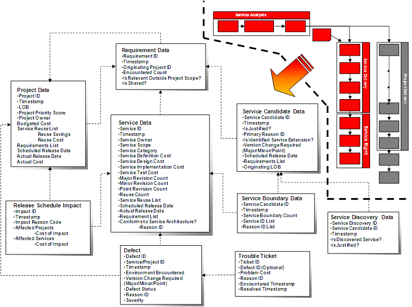
Complete Conceptual Instrumentation Entities and their Relationship
Service Analysis consists of three main sets of engineering practices:
These topics are covered in detail in the SOA Engineering Planning view and its associated technique overviews for each area. This section covers the instrumentation of the Service Analysis processes that are described within that view.
SOA Requirements Management consists of gathering requirements at the project level, followed by refining the requirements and classifying them at the enterprise level. The information gathered within the process provides a key enabler for the rest of the analysis processes. The value of the information gathered through SOA Requirements Management grows over time. The SOA Requirements Management process is illustrated in the figure below:
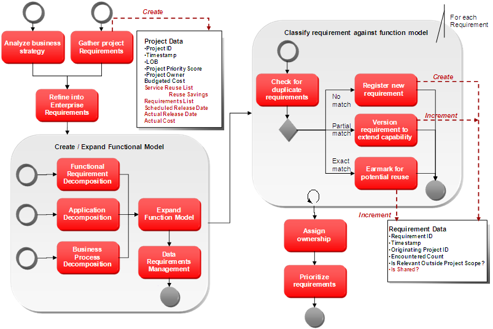
SOA Requirements Management - Instrumentation
The Service Analysis processes begin with a project. When a project is put forward and the requirements management process begins for the project there are a number of instrumentation data elements that should be collected with respect to the project. These include:
During the requirements management process requirements are analyzed and examined at the enterprise level. When a new requirement is encountered a new requirement record is created consisting of the following instrumented data elements:
As each requirement is processed checks for duplicate or overlapping requirements are examined. In the event that an existing requirement is encountered its Encountered Count element is incremented to track this event.
Service Identification and Discovery provides an analytical method for identifying service candidates together with discovering existing services and service candidates. This process is driven from the information gathered through SOA Requirements Management. The result of the process is a set of service candidates that have been justified and will be scheduled for delivery through SOA Release Planning, as well as services and service candidates that have been prescribed for reuse by the project.
The high-level Service Identification and Discovery Process is illustrated below:
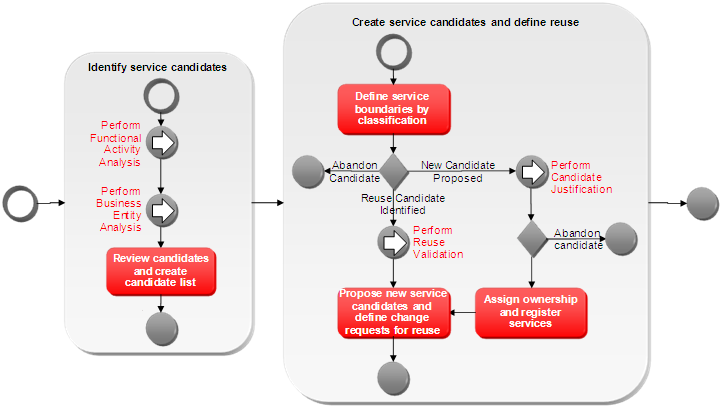
Service Identification and Discovery - High-Level Process
In this process, service candidates are proposed from two angles. The first is by iterating through each of the functional activities and examining the state of the requirements to identify reuse candidates, and proposed service candidates. The second is by studying the business entities and proposing data service candidates, or reuse candidates. These reuse candidates are examined further through a boundary analysis, which will give an updated list of service candidates, or reuse candidates.
The shared service candidates are then run through the justification process. Proposed candidates that are justified will be marked for realization and those that are not will be set to inactive. Service reuse candidates are passed through the reuse validation process. In this process, the candidate will be either prescribed for reuse if the project is authorized to use the shared asset or reuse will be denied.
Instrumentation data is collected from each of these processes beginning with the Functional Activity Analysis process, which is depicted below:
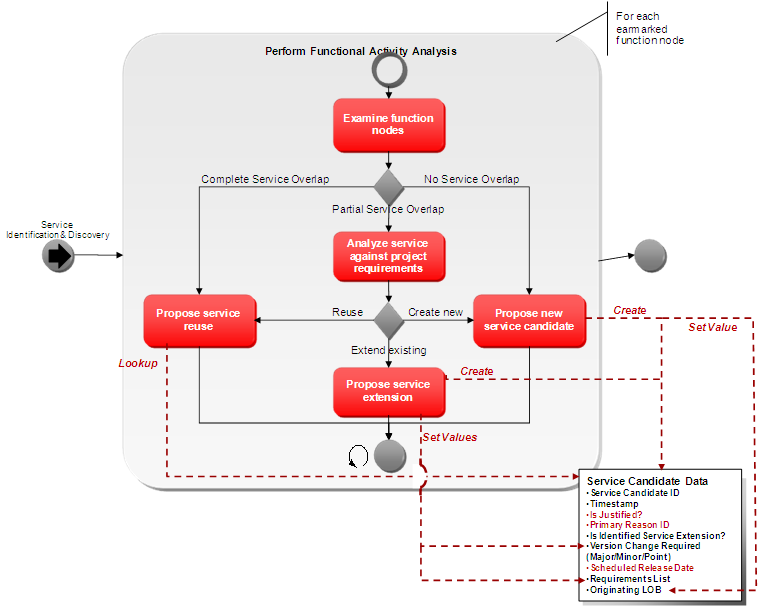
Functional Activity Analysis - Instrumentation
This process has three primary branches which are centered on the creation, extension, or discovery of service candidates. In the event that a new service candidate is created a new Service Candidate instrumentation record is created with the following established elements:
In the event that a service candidate is encountered where an extension is to be proposed, a new service candidate instrumentation record is created along with the following additional elements that are tracked with respect to the instrumented service candidate data:
The next process to be examined with respect to instrumentation is a sister process to the Functional Activity Analysis process. The Business Entity Service Candidate Analysis process examines data requirements and identifies service candidates based on data requirements identified through the project. The process is illustrated below:
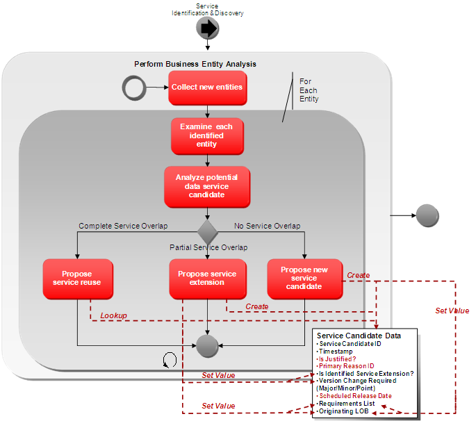
Business Entity Analysis - Instrumentation
Similar to the Functional Activity Analysis process just examined, this process has three primary branches which are centered on the creation, extension, or discovery of service candidates (based on data requirements). In the event that a new service candidate is created, a new service candidate instrumentation record is created with the following established elements:
In the event that a service candidate is encountered where an extension is to be proposed, a new service candidate instrumentation record is created along with the following additional elements that are tracked with respect to the instrumented service candidate data:
These two processes result in the collection of instrumentation data regarding the creation of new service candidates as well as candidate extension proposals. During these processes, discovered service candidates may also be encountered. This event should also be instrumented. The High-level Service Identification and Discovery process, which is illustrated below, is used to depict the capture of this data with respect to service candidate discovery.
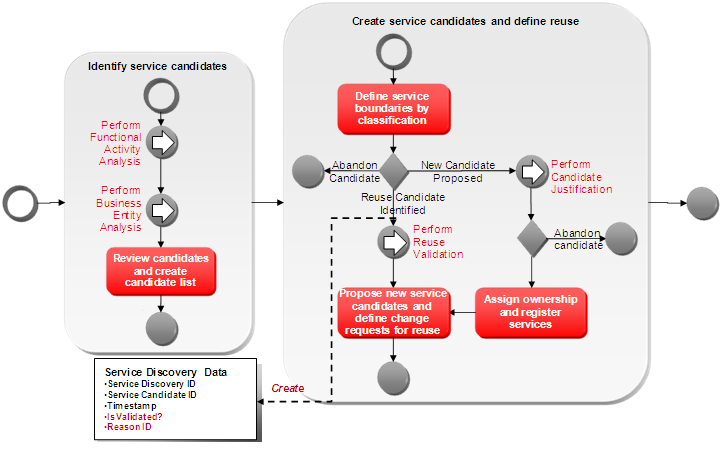
Service Identification and Discovery - High-Level Instrumentation
The discovery of a justified service candidate results in the creation of a Service Discovery instrumentation record:
After new service candidates are identified, or existing candidates are discovered, justification processes are utilized to determine if the new service candidates, or candidate extensions should be realized, or if discovered candidates may be reused by the project.
The instrumentation requirements for the Service Candidate Justification process are illustrated below. This process covers the justification of new or proposed service candidates and service candidate extensions for realization as shared services.
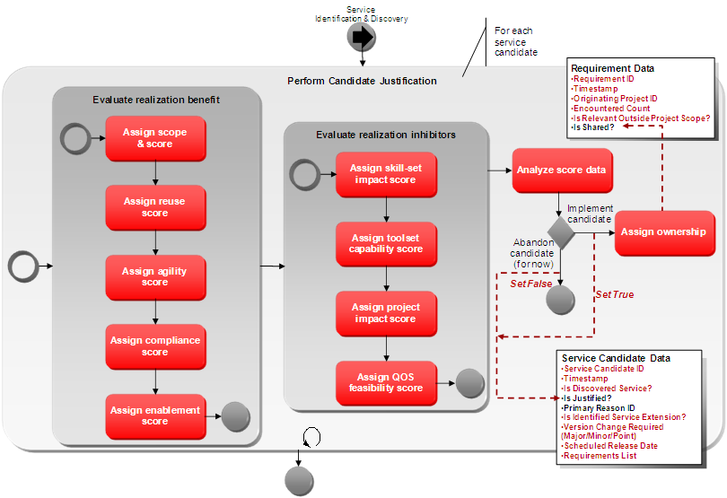
Service Candidate Justification - Instrumentation
The Service Candidate Justification process represents a scoring procedure which is used to analyze the benefits of realizing a service candidate as a shared service against the additional costs or impacts required to realize this candidate as a shared asset. The decision results should be captured as instrumented data. In doing so, the following additional elements are captured as part of the Service Candidate instrumentation record:
The following list represents a set of reason codes related to justification:
When a service candidate fails justification, the following list of reason codes related to failed service candidate justification applies:
The Primary Reason ID value sets provided above represent a default set, and should be customized or extended to meet the particular demands of the adopting SOA.
One final step required for justified service candidates is to set the Is Shared value of each attached requirement’s instrumentation record to true.
When service candidates are discovered and linked to existing shared services (or services in the process of being realized), a validation process is used to determine if a project may indeed reuse the service. The instrumentation requirements for the Reuse Validation process are illustrated below:
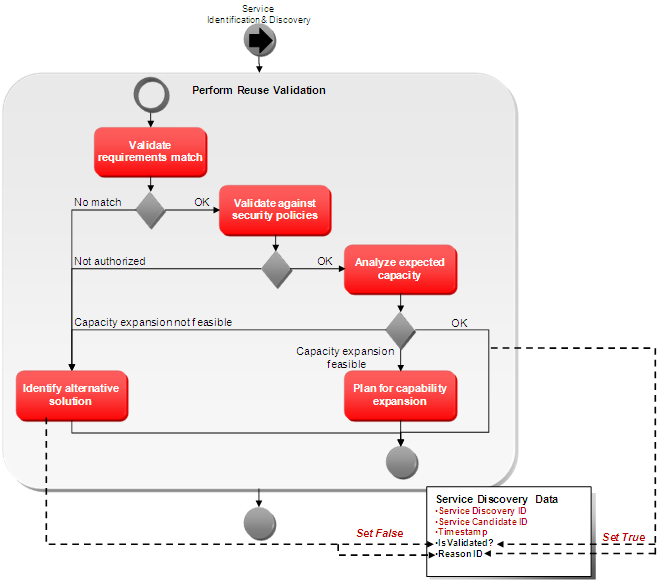
Reuse Validation - Instrumentation
The Service Candidate Reuse Validation process represents a cross-check procedure that is used to analyze the appropriate fit for a service with respect to the project’s intended uses. The decision results should be captured as instrumented data. In doing so, the following additional elements are captured as part of the Service Discovery instrumentation record:
The following list represents a set of reason codes related to reuse validation failures:
Again, the Primary Reason ID value set provided above represent a default set, and should be customized or extended to meet the particular demands of the adopting SOA.
SOA Release planning is an iterative process that schedules SOA projects and service candidates for delivery. The dependencies between projects and service candidate delivery cycles are also managed through SOA Release Planning through to deployment. SOA Release Planning takes care of resource constraints through priority based contingency planning.
The scheduled release dates for projects and service candidates are prime targets for instrumentation as they provide overall performance indicators with respect to engineering efficiency. Further, when resource constraints are encountered decisions need to be made. The decisions made, which lead to project or service delivery impacts, should be instrumented.
Instrumentation data captured from the high-level SOA Release Planning process is depicted below:
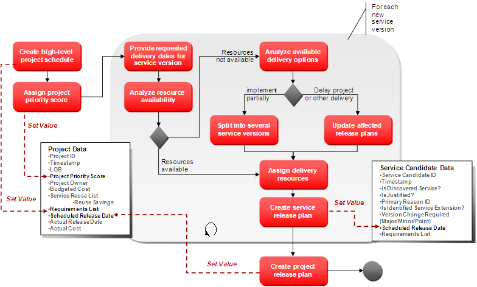
SOA Release Planning - High-Level Instrumentation
The SOA Release Planning process coordinates the scheduling of both projects and service candidates that have been justified for realization. As the high-level project schedule is constructed, the final list of requirements assigned to the project will be available. In addition to setting the requirements list, the project priority should be captured as part of the instrumented data. Finally as the process completes, the project’s scheduled release date is determined and should also be captured with respect to instrumentation data. The following elements are affected in this process:
Further, for each service candidate passed through the process, the Scheduled Release Date value should also be instrumented.
When resource constraints are encountered, a contingency process is initiated to determine the course of action for handling the constraint. When impacts are assessed against projects or services, the impacts should be recorded from an instrumentation standpoint. Instrumentation of the Contingency Planning process is depicted below:
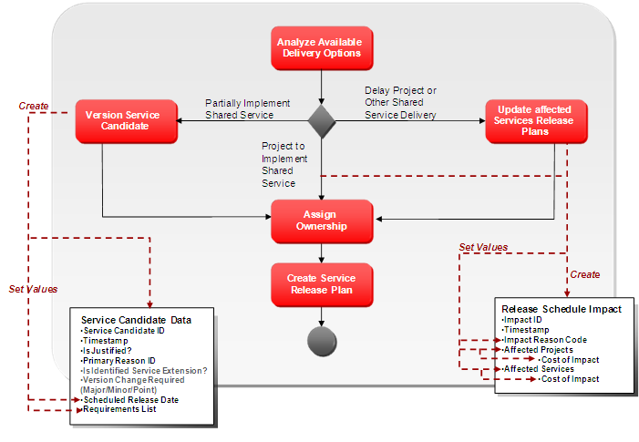
Contingency Planning - Instrumentation
There are two scenarios that may impact project or service candidate schedules. The first is when a decision is made to reduce the scope of a service candidate in order to free up resources for another service or project. In this event, the service candidate is versioned and a new service candidate instrumentation record is created. The ID, Timestamp, Justification and Reason ID are copied forward from the previous candidate’s instrumentation record. The following values are then set:
The second scenario is when the decision is made to impact one or more project and/or service schedules in order to make room for the higher priority initiative. In this scenario, an instrumentation record is created representing the Release Schedule Impact as follows:
The following list represents a set of reason codes related to release schedule impacts:
Again, the Impact Reason ID value set provided above represent a default set, and should be customized or extended to meet the particular demands of the adopting SOA.
Service Delivery consists of the core delivery engineering activities taking a service candidate and molding it into one or more services. Service candidates that enter Service Delivery have been justified for realization and scheduled for release. Service Delivery begins with Service Definition where the service boundaries and contracts are created for services resulting from the service candidate. Service Definition primarily determines service boundaries as well as the construction of the service contract. Service contracts include the linked requirements coming from the service candidate, but also may be influenced by enterprise and LOB scoped contracts that are appended to every service based on its intended scope.
Service Design then acts upon the service contracts to develop the services’ interfaces. The process of defining a service interface is much more involved than simply coming up with the input and output for the service. Service Design analyzes the contract from the consumer’s perspective, and is influenced by factors such as scope (enterprise, LOB, application, etc), message exchange patterns (MEPs) as well as non-functional requirements such as expected volume, and response time requirements (specified in the contract).
Service Implementation ensures that all aspects of the service contracts are implemented and upheld through the delivery of business logic as well as the deployment to service infrastructure. The implementation must faithfully realize the service contract and interface which are defined through Service Definition and Design. Both functional and non-functional aspects (such as latency, throughput, availability, etc) of the contract must be fully realized. If some aspects of the contract cannot be realized for any reason, then the contract must be updated to reflect the true reality of the service.
Service Testing plays a role throughout the entire Service Delivery cycle. After Service Definition, the test criteria can be established. Once Service Design has completed, the test cases can be written against the interfaces. Finally, during Service Implementation the test cases are executed to ensure expected quality, and adherence to contract is achieved prior to releasing the service into production.
An overview depiction of Service Delivery is provided below:
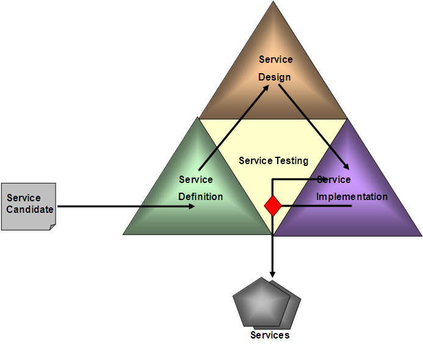
Service Delivery Overview
In some regards, the Service Delivery process parallels that of a full lifecycle project delivery lifecycle and many of the same principals and practices are applicable not only from a methodology perspective, but also from an instrumentation perspective. Therefore, many of the same core instrumentation values that have been traditionally collected for project deliveries apply to service delivery. There are also some unique areas with respect to service delivery that should also be instrumented; all of which are covered within this section.
Service Definition covers the set of activities required to effectively define service contracts from a service candidate. The service contract for a service provides the detailed description of both functional and non-functional characteristics that must be fulfilled by the interface and the implementation in order for a service to be realized.
The justified service candidate provides the input to Service Definition. This process identifies service boundaries, constructs the contracts from the separated requirements, attaches any enterprise specified contracts, and performs a feasibility check to ensure that for each service defined, the technology and resources available will be able to meet the requirements of the contract.
The outcome of Service Definition is one or more service contracts. The Service Definition process with respect to instrumentation is depicted below:
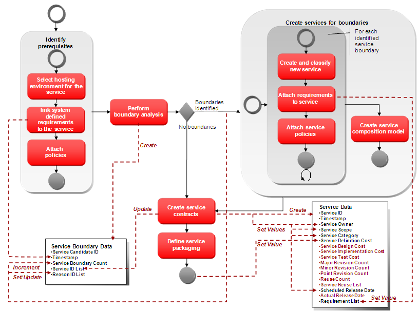
Service Definition - Instrumentation
There are two main elements that are important with respect to instrumenting the Service Definition process. The first is the identification of service boundaries, and the second is the definition of a service via its service contract.
A Service Boundary instrumentation record is created for each service candidate.
Note: A single service boundary represents a division of requirements within a service candidate, and therefore results in the construction of two separate services. Likewise, when two service boundaries are identified then three services are constructed (number of services = number of service boundaries + 1).
The Service Boundary instrumentation record contains the following data:
For each service boundary encountered the following is recorded against the Service Boundary instrumentation record:
As each service is defined the following is recorded against the Service Boundary instrumentation record:
If no service boundaries are identified for a service candidate, then the Service Boundary instrumentation record will have a service boundary count of 0 and just a single service attached to the list of services defined through this candidate.
When a service boundary is identified, the following list of reason codes are defined to capture the reason for defining the boundary:
The Reason ID value set provided above represent a default set, and should be customized or extended to meet the particular demands of the adopting SOA.
Once boundary analysis completes, each service’s contract is defined. This is also the time in which the service’s instrumentation record is created. The following elements are captured from an instrumentation standpoint for each service:
The remainder of the Service Delivery process is fairly straight forward from an instrumentation standpoint. The illustration below depicts the service delivery process from a high-level with respect to instrumented data:
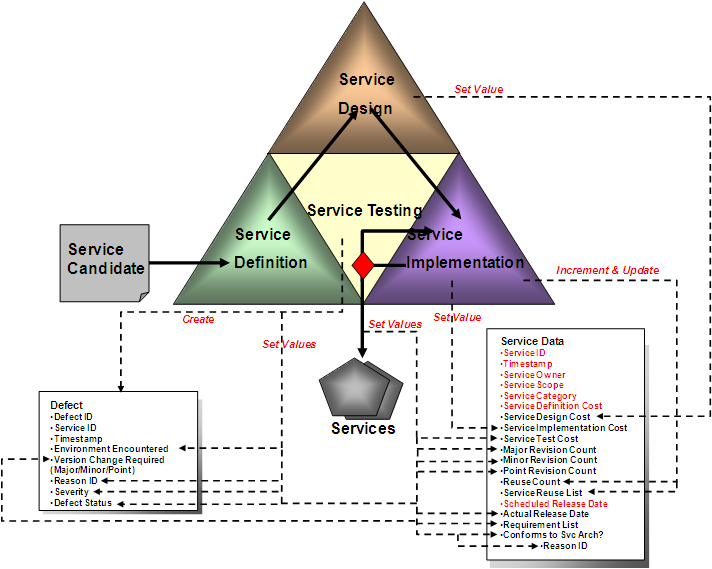
Service Delivery - Instrumentation
The following Service instrumentation values are set during Service Design:
The following Service instrumentation values are set during Service Implementation:
The following Service instrumentation values are set after the completion of the Service Delivery process:
The following list of reason codes are defined based on the reasoning for a service to deviate from the reference architecture:
The Reason ID value set provided above represent a default set, and should be customized or extended to meet the particular demands of the adopting SOA.
As testing takes place throughout the Service Delivery processes, defects are identified. The following values are captured with respect to defect instrumentation data:
The following list of reason codes are defined based on the reasoning for a service defects primary cause:
The Reason ID value set provided above represent a default set, and should be customized or extended to meet the particular demands of the adopting SOA.
Project delivery represents the delivery of the set of requirements that originated through a project but are not to be realized by the reuse or delivery of shared services. At a minimum some high-level instrumentation data is necessary from this process. Instrumentation with respect to project delivery illustrated in the depiction below:
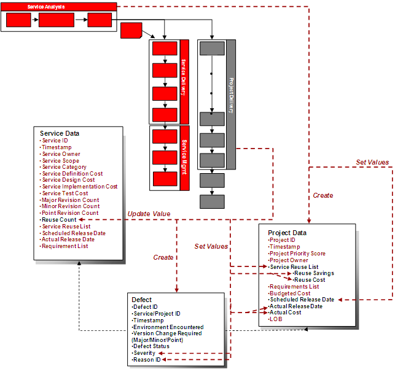
Project Delivery - Instrumentation
The project’s instrumentation record is created during the SOA Requirements Management process, and the project’s Scheduled Release Date is instrumented during the SOA Release Planning process, which are both processes within the Service Analysis phase of the Service Engineering process. During the dedicated delivery phase of the project the following project related instrumentation data should be captured:
During test activities for the project, defects may be opened against the project or shared services consumed by the project. The following data should be instrumented for each defect uncovered during project testing cycles:
The following list of reason codes are defined based on the reasoning for a service defects primary cause:
The Reason ID value set provided above represent a default set, and should be customized or extended to meet the particular demands of the adopting SOA.
Just because a project or service enters steady-state within an operational environment does not mean that instrumentation data related to the engineering process is no longer collected for these projects and services. In reality, defects encountered against operational services and projects give valuable data with respect to the level of quality assured through delivery and in particular testing cycles. This level of instrumentation is illustrated below:
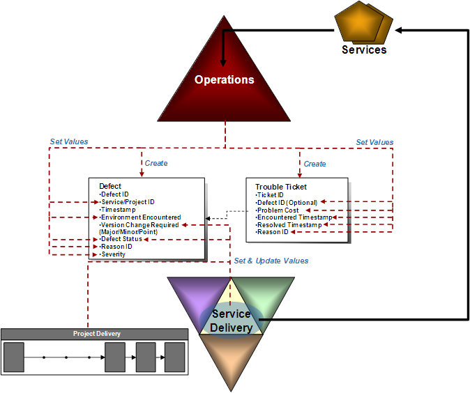
Engineering Based - Operations Instrumentation
When a problem is encountered in the operational environment, a trouble ticket (or something semantically equivalent) is created. This event should be instrumented and the following instrumentation data captured:
The following list of reason codes are defined based on the reasoning for a trouble ticket’s primary cause:
The Reason ID value set provided above represent a default set, and should be customized or extended to meet the particular demands of the adopting SOA.
If a trouble ticket results in the opening of a defect against a project or service, a new defect instrumentation record should be created as follows:
The following list of reason codes are defined based on the reasoning for a service defects primary cause:
The Reason ID value set provided above represent a default set, and should be customized or extended to meet the particular demands of the adopting SOA.
There are several different ways to note metric computations. A few basic requirements are necessary when selecting a notation:
For the purpose of this document a relatively simple notation has been selected which meets these criteria. In this notation there are two main clauses:
For the purpose of describing the notation a sample computation has been illustrated below:

Sample Metric Computation
The top portion of the above illustration represents the title for the metric. The center provides the metric’s expression, and the lower portion represents the data required in the computation.
Statement: for each <target> - The for each clause is used to iterate over the <target> entity or entities. for each clauses may be nested.
Statement: where (conditions) - The where clause is used to provide conditions for the for each clause in which it is nested. The (conditions) statement is optional, and if omitted it means that all entities referenced within appropriate level of the expression will be included in the calculation.
Input: t1 & t2 - The starting time and ending time for the computation is represented as t1 (starting time) and t2 (ending time).
Input: sample - If sample is provided as the <target> of a for each clause, then it is providing the time period to break up the results over. For instance if t1 = Jan 1, 2000 and t2=Dec 31, 2007 and the sample is specified as 1 year; then the for each will take 8 iterations (one for each year). This allows for flexibility, as the sample may be set to something finer grained, or even set to the entire time period.
Referencing Variables: -Variables are identified within the Data clause (see below). If a variable references an entity, an element within the entity can be referenced by using the “.” separator. For instance from the example above, referencing the Service Reuse List of the Project entity would be achieved as follows: p.Service Reuse List.
Booleans: - In the expression, it is sometimes necessary to count against a Boolean expression. Therefore, mathematically, when Boolean are used in expressions, 0 is the mathematical representation for false and 1 is the mathematical representation for true.
The Data clause contains definitions for the list of variables used in the Expression clause, and maps them to the source within the conceptual instrumentation data from which they originated. A variable can be specified against an entire conceptual instrumentation entity, or elements within entities.
Refer to the previous section, Define Metric Notation Standards for an explanation of the notations used in the metrics.
The following metrics have been defined based on data instrumented from the Service Analysis processes of the SOA engineering processes within OUM. The processes covered in Service Analysis include:
The Requirements Overlap metric is depicted below:
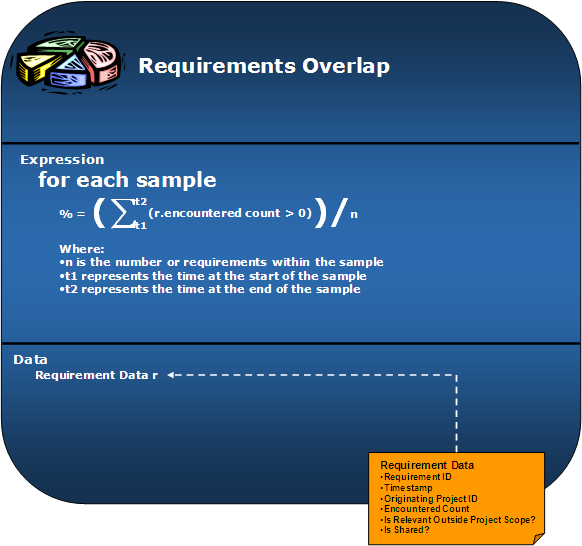
Requirements Overlap Metric
Purpose: This metric is used to get a gauge on the amount of duplicate requirements encountered during SOA Requirements Management.
Computation: This metric computes a percentage for each sample size of the number of requirement overlap conditions encountered versus the number of requirements encountered.
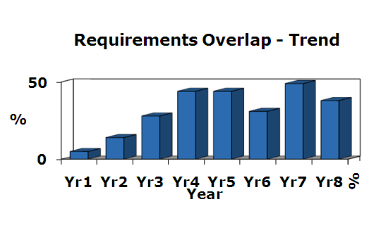
Analysis: Requirements Overlap
Interpretation: The graph provided above gives a sample output from the metric. In this scenario t1 = Jan 1, Year1, t2 = Dec 31, Year8 and sample = 1 year. The trend indicates an increasing percentage of overlaps encountered for some time, before leveling off. This would be the expected trend. Where the percentage levels off would vary from organization to organization. In Year5 there was decrease in overlaps detected. This may be a result of a change in business strategy.
If a relatively low percentage is maintained, it may be worth taking a closer look at the requirements analysis process. Or, it may be useful to look at additional metrics where requirements overlap percentage is conducted against a larger sample size, or even narrowed by LOB (see the next metric). An alternative area to look at would be to correlate the requirements overlap percentages to service discovery percentages and/or the creation of new services. If service sprawl looks to be a problem within the organization, and percentages in requirements overlap is low, then there may very well be a problem with the SOA Requirements Analysis processes.
The Requirements Overlap by LOB metric is depicted below:
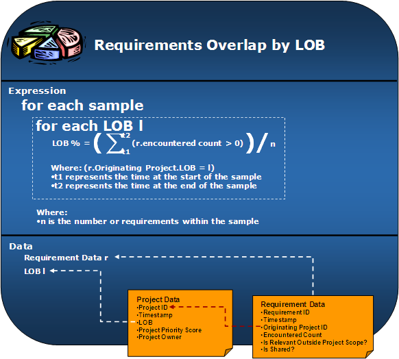
Requirements Overlap by LOB Metric
Purpose: This metric is used to get a gauge on the amount of duplicate requirements encountered during SOA Requirements Management narrowed by LOB.
Computation: This metric computes a percentage for each sample size of the number of requirement overlap conditions encountered versus the number of requirements encountered. The results are separated by LOB.
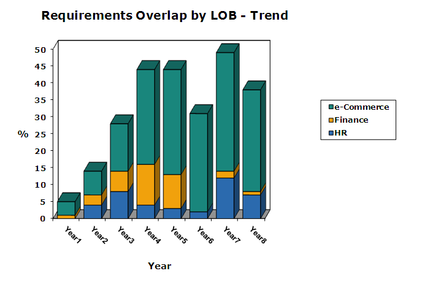
Analysis: Requirements Overlap by LOB - Trend
Interpretation: The graph provided above gives a sample output from the metric. In this scenario t1 = Jan 1, Year2, t2 = Dec 31, Year8 and sample = 1 year. The trend indicates an increasing percentage of overlaps encountered for some time, before leveling off. This would be the expected trend. Where the percentage levels off would vary from organization to organization. In Year6 there was decrease in overlaps detected. This may be a result of a change in business strategy. From the previous metric (Requirements Overlap – Trend) it was unclear as to what may have happened in Year6. The example provided here, indicates that in Year7 no overlap was encountered by projects in finance. Further the trend shows that in Year7 and Year8, there was also very little overlap encountered in Finance projects. This means that a major change in project direction within Finance potentially took place in Year6, Finance has been executing significantly less projects, or there has been a regression in the SOA Requirements Management process when executed against Finance projects which would warrant additional investigation.
Again, if a relatively low percentage is maintained it may be worth taking a closer look at the requirements analysis process. Or, it may be useful to look at additional metrics where requirements overlap percentage is conducted against a larger sample size, or even narrowed by LOB (see the next metric). An alternative area to look at would be to correlate the requirements overlap percentages to service discovery percentages and/or the creation of new services. If service sprawl looks to be a problem within the organization, and percentages in requirements overlap is low, then there may very well be a problem with the SOA Requirements Analysis processes.
By segregating the data by LOB, those analyzing this metric are able to understand the performance of the SOA Requirements Management process at the LOB level. This allows for trends to be inspected at both the overall and LOB level, which may be used to uncovering problems with execution of the processes at the specific LOB level.
The Service Candidate Justification Failures metric is depicted below:
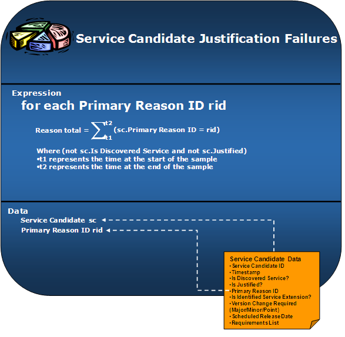
Service Candidate Justification Failures Metric
Purpose: This metric is used to get a gauge on the overall reasoning as to why service candidates are failing justification. Service justification failures are rolled up under the following primary reasons:
These reasons may be customized to best fit the organization adopting SOA.
Computation: This metric computes reason totals for service candidates introduced within the sample period but fail the justification process, preventing them from being realized as shared services.
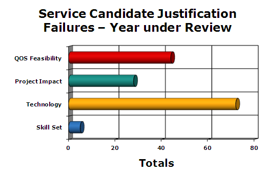
Analysis: Service Candidate Justification Failures
Interpretation: The example depicted above t1 = Jan 1 of the year under review (Year8 from our previous diagrams), and t2 = Dec 31 of the year under review. In this example, there appears to be a fairly large bias towards technology based failures. This means that it is probably worth taking a closer look at what specific technological boundaries exist that are prevent candidate justification, and potentially investing in overcoming the issue.
Basically a large value in any of the reason areas represents a need to take a closer look. Each may require a different strategy to overcome the problem, but a large amount of service candidate failures may be a serious problem within the engineering processes, as these candidates are then handled within project and the potential shared benefits from realizing these candidates is lost for the time being.
The following is a summary of analysis by reason:
In addition to analyzing this metric, another approach, or follow-on metric would be to measure reasoning a the LOB level to see if a particular LOB is deviating from trend with respect to the rest of the business regarding service candidate justification failures. This metric is provided in the next section:
The Service Candidate Justification Failures by LOB metric is depicted below:
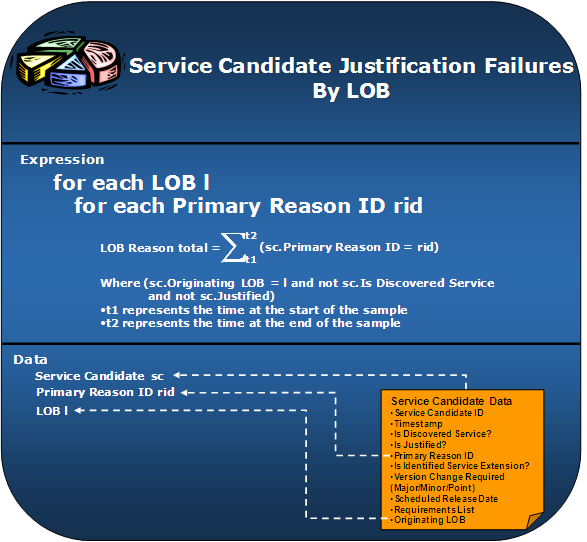
Service Candidate Justification Failures by LOB Metric
Purpose: This metric is used to get a gauge on the overall reasoning as to why service candidates are failing justification narrowed by line of business.
Computation: This metric computes reason totals for service candidates introduced within the sample period but fail the justification process, preventing them from being realized as shared services. The totals are broken down by line of business.
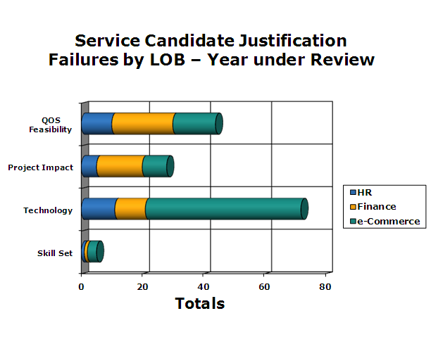
Analysis: Service Justification Failures by LOB
Interpretation: The interpretation for this metric is very similar to the last metric. The main difference is that the distinction by line of business can be clearly drawn. As we drill into the justification failures by LOB, it is evident that within the e-Commerce LOB there is definitely a bias towards technology being the main inhibitor to service candidate justification. The remaining lines of business are fairly uniform across the reasoning with the exception of Skill Set which does not appear to be an issue.
Basically a large value in any of the reason areas represents a need to take a closer look. Each may require a different strategy to overcome the problem, but a large amount of service candidate failures may be a serious problem within the engineering processes, as these candidates are then handled within project and the potential shared benefits from realizing these candidates is lost for the time being.
The Service Candidate Justifications metric is depicted below:
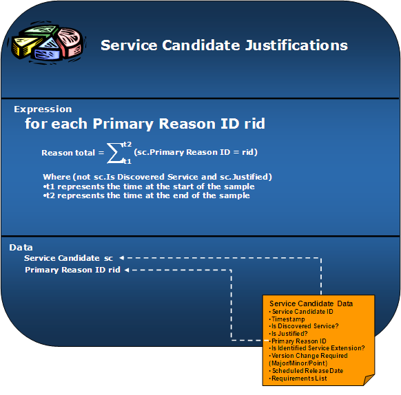
Service Candidate Justifications Metric
Purpose: This metric is used to get a gauge on the overall reasoning as to why service candidates are being justified for realization. Service candidate justifications are rolled up under the following primary reasons:
These reasons may be customized to best fit the organization adopting SOA.
Computation: This metric computes reason totals for service candidates introduced within the sample period which pass the justification process, indicating that they will be realized as shared services.
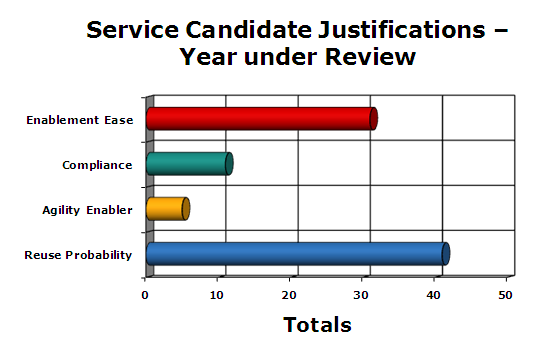
Analysis: Service Candidate Justifications
Interpretation: If service sprawl seems to be an issue within the organization, this may be one of the first metrics to take a look at, as it gives an indicator as to what reasons are generally being used for service candidate justification. If one particular reason seems to have a large bias then a closer look at the process and potential adjustment to the scoring system may be in order.
For instance, if Reuse Probability is a large percentage of the reason totals, as in the example provided above, then it warrants taking a look at service reuse levels. If the majority of the services are being justified because of a large reuse potential, then savings through reuse, and total reuse levels should be on an upward trend. If not, then there is an obvious problem with justification.
The following is a summary of analysis by reason:
Another approach, or follow-on metric would be to measuring reasoning a the LOB level to see if a particular LOB is deviating from trend with respect to the rest of the business regarding service candidate justifications. This metric is illustrated below:
The Service Candidate Justifications by LOB metric is depicted below:
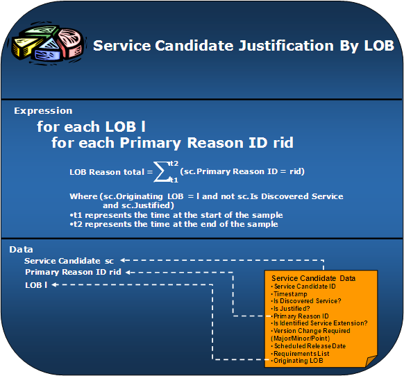
Service Candidate Justifications by LOB Metric
Purpose: This metric is used to get a gauge on the overall reasoning as to why service candidates are being justified for realization. The results are separated by LOB.
Computation: This metric computes reason totals for service candidates introduced within the sample period which pass the justification process, indicating that they will be realized as shared services. The results are separated by LOB.
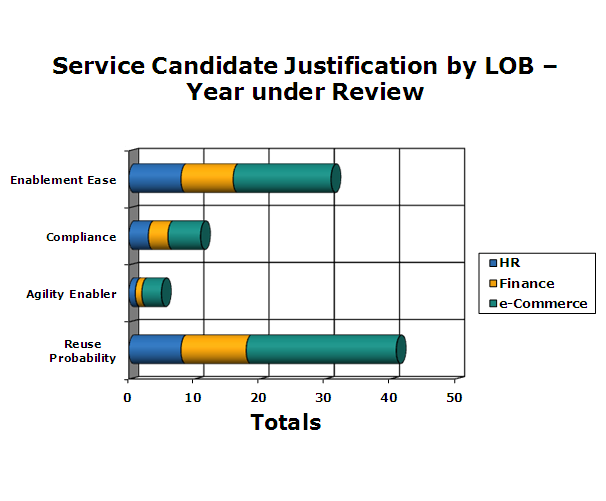
Analysis: Service Candidate Justifications by LOB
Interpretation: The same interpretation analysis can be done against this metric as done against the previous metric (Service Candidate Justifications). The difference is that the results of running this metric may lead to indications of problems coming from specific lines of business. In the example above, it is clear that Reuse Probability is the primary driver for justifying service candidates originating from the e-Commerce LOB. If service sprawl is becoming an issue, then it may be worth while to observe the execution of the Service Identification and Discovery processes executed by e-Commerce projects.
Note: Problems with over-justification are not just realized in the form of service sprawl. They also cause the service factory to become less efficient as time and resources are spent engineering services that should have never been justified as services in the first place.
The Service Reuse Validation metric is depicted below:
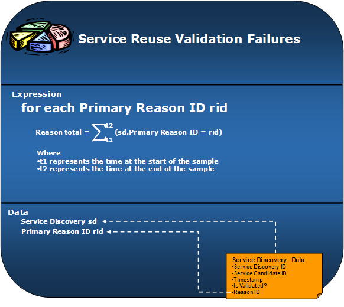
Service Reuse Validation Failures Metric
Purpose: This metric is used to analyze service reuse validation failures. When a service is discovered a validation process is executed to validate that the intended consumer will be able to reuse the service. Validation failures are rolled up and categorized against the following reasons:
These reasons may be customized to best fit the organization adopting SOA.
Computation: This metric computes reason totals for service candidates discovered within the sample period which fail the validation process, indicating that they cannot be reused by the discovering project.
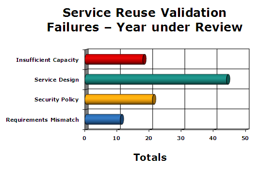
Analysis: Service Reuse Validation Failures
Interpretation: Any large value observed against any particular reason needs to be scrutinized. The following is a summary by reason:
The Service Candidate Extension Justification Failures metric is depicted below:
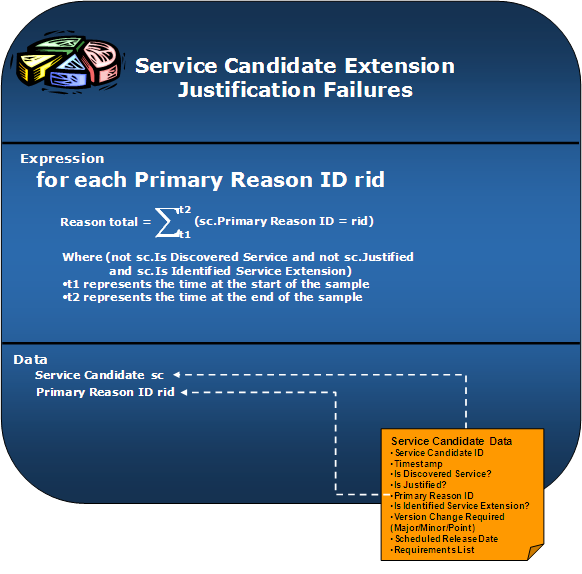
Service Candidate Extension Justification Failures Metric
Purpose: This metric is used to get a gauge on the overall reasoning as to why service candidate extensions are failing justification. Service justification failures are rolled up under the following primary reasons:
These reasons may be customized to best fit the organization adopting SOA.
Computation: This metric provides reason totals for service candidate extensions introduced within the sample period but fail the justification process, preventing them from being realized as shared services.
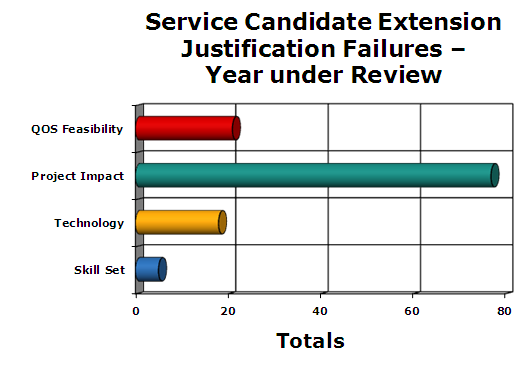
Analysis: Service Candidate Extension Justification Failures
Interpretation: The main indicator to look for here is a high-number of service candidate extensions failing because of Project Impact this typically indicates that there is a problem with respect to service evolution within the SOA. This could potentially be result of the following:
The Justified Service Version Change Summary metric is depicted below:
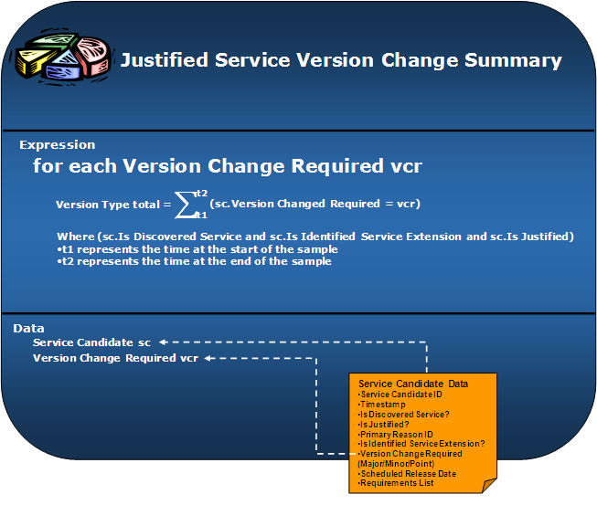
Justified Service Version Change Summary Metric
Purpose: This metric provides a measure against how healthy service evolution is within the SOA. In general the service version changes possible include:
Computation: This metric gathers data on justified service extensions and totals these events by the severity of the change required to the service.
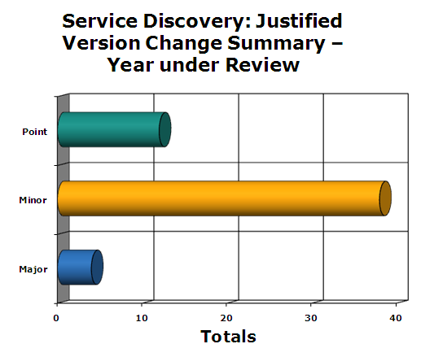
Analysis: Justified Service Version Change Summary
Interpretation: In general a healthy SOA will have services evolving with the least amount of impact to its consumers as possible. Large numbers beside Point and Minor version changes should not be considered alarming. Large numbers with respect to Major revisions should be scrutinized seriously, as these types of changes are typically high-risk and an overall impeder of SOA efficiency as large amounts of testing may be required. The goal of the service factory is to design services in a way that is as flexible and accommodating as possible to change, a large number of major change revisions requires indicates failure in this respect.
The Not Justified Service Version Change Summary metric is depicted below:
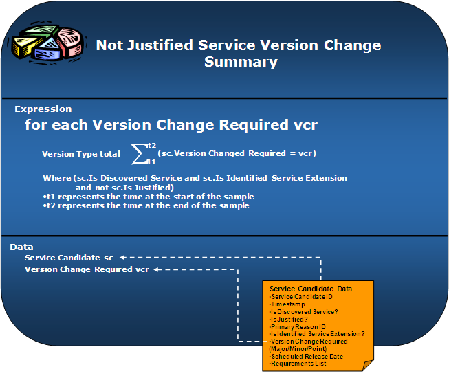
Not Justified Service Version Change Summary Metric
Purpose: This metric provides a measure against how healthy service evolution is within the SOA. It provides the reciprocal view to the previous metric to look at the number of inhibitors encountered with respect to service evolution. In general the service version changes possible include:
Computation: This metric gathers data on service extensions failing justification, and totals these events by the severity of the change required to the service (potentially providing the reasoning for justification failure).
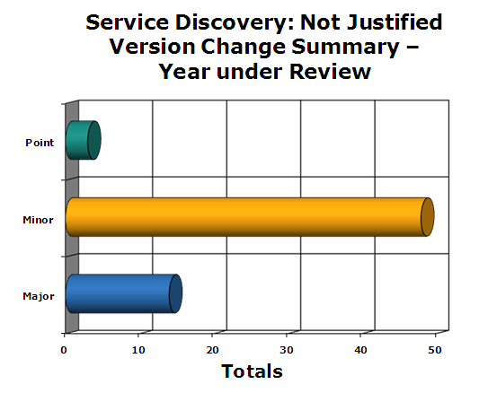
Analysis: Not Justified Service Version Change Summary
Interpretation: In general the majority of service extension justification failures should originate from perceived major changes to a service. If point or even minor changes are still being rejected by the justification process then a closer look is definitely warranted, as they changes should be expected within an efficiently operating SOA. For further investigation refer to the metric: Service Candidate Extension Justification Failures which should provide insight into why service candidate extensions are not being justified.
The Service Creation vs. Reuse Trend metric is depicted below:
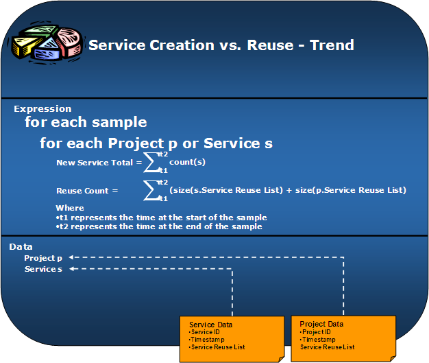
Service Creation vs. Reuse Trend Metric
Purpose: This metric provides a measurement of how fast the service catalog is growing with respect to services being reused.
Computation: This metric collects the totals for the number of services initiated within the sample, and the number of services reused by projects or services initiated within the sample.
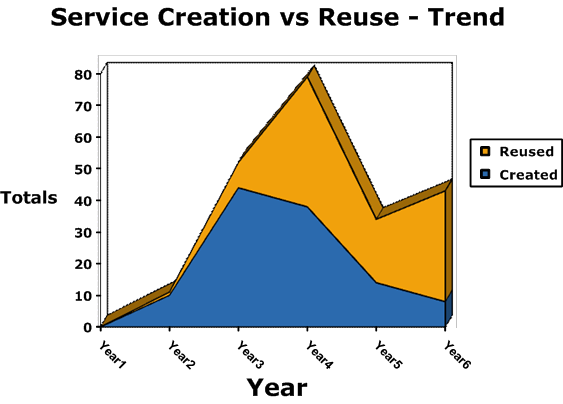
Analysis: Service Creation vs. Reuse Trend
Interpretation: As an SOA emerges from infancy a tendency towards service creation over service reuse should be expected. This is part of the initial investment required in SOA where you must first create before reuse. Overtime, service creation should begin to shrink in relationship to the amount of services consumed. An optimized SOA will tend to have a very large ratio of reuse to creation, which means there is very little impedance to service discovery and reuse validation, nor is there issues holding back service evolution, or capacity; all of which could cause service reuse to decline or grow less rapidly.
The Service Creation vs. Reuse Totals metric is depicted below:
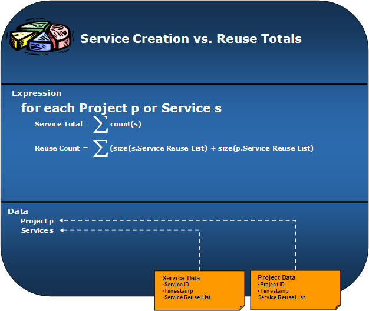
Service Creation vs. Reuse Totals Metric
Purpose: This metric provides a ratio of service population with respect to service reuse levels. At a minimum every service created should be reused at least once, therefore a larger ratio of services over reuse is definitely considered as very negative.
Computation: This metric computes a total of the number of services and a total for the amount of reuse events in the SOA.
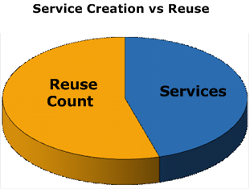
Analysis: Service Creation vs. Reuse Totals
Interpretation: The reuse count should always be greater than the Service count, even in very “young” SOAs. It makes very little sense to create a service without at least one consumer. Unfortunately, this happens in many instances, and when the first consumer does come along, the first revision to the service is quite often necessary.
There is always some level of additional investment required to deliver a service into a shared environment (right-clicking and creating a web-service is not a service!). In doing so, reuse levels greater than one per service, on average, is necessary to get a minimal savings from the engineering overhead. A large ratio of reuse to service totals is desirable, as this indicates that the right services are being created, and they are flexible and consumable by a large number of consumers, while not being impeded by lengthy evolution requirements, or costly infrastructure upgrades.
Further, if services are typically being justified for realization because of a high-reuse potential, then that trend should be evident here (see metric: Service Candidate Justifications).
The Release Plan Impacts metric is depicted below:
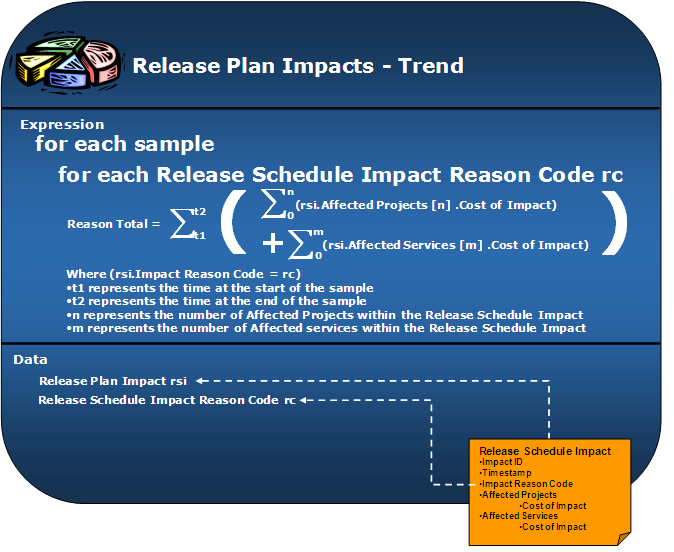
Release Plan Impacts Metric
Purpose: This metric provides a gauge of the cost or resource constraints conditions encountered during release planning activities over a sampled trend and the totals are broken out by the reasoning causing the impact. The potential reasons for an impact include:
Computation: This metric computes a total of the number of services and a total for the amount of reuse events in the SOA.
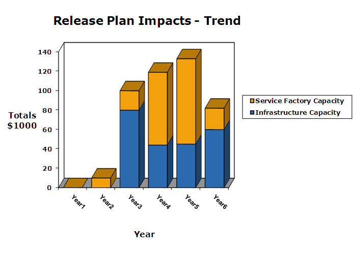
Analysis: Release Plan Impacts
Interpretation: When a decision is made to impact a project or service because insufficient resources are available, or resources need to be reassigned for the purpose of fulfilling higher priorities the impact is instrumented. Project and service release impacts should be monitored closely, as they give an indicator as to how responsive IT can be with respect to meeting the demands of the business.
If high-levels of impacts are encountered then the cost of increasing capacity in the targeted areas should be considered.
Refer to the section, Define Metric Notation Standards for an explanation of the notations used in the metrics.
The following metrics have been defined based on data instrumented from the Service Delivery processes of the SOA engineering processes within OUM. The processes covered in Service Delivery include:
The Service Boundary Identification metric is depicted below:
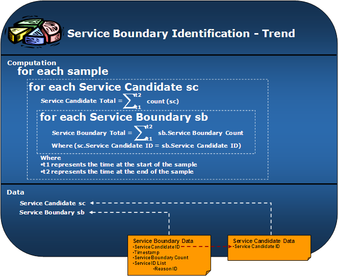
Service Boundary Identification Metric
Purpose: This metric is used to measure the effectiveness of the Service Candidate granularity resulting from Service Analysis. Typically when Service Candidates are put forward for definition, in an ideal scenario they should already be fine enough grained where minimal service boundaries will be identified. The information gleaned by measuring identified boundaries in relation to service candidates may be used to optimize the SOA Requirements Management and Service Identification and Discovery processes.
Computation: This metric is computed by totaling the number of service candidates encountered in each sample. For each service candidate visited within the sample, the number of service boundaries identified is also counted. This allows for the ratio of service candidates to boundaries to be measured over each sample period.
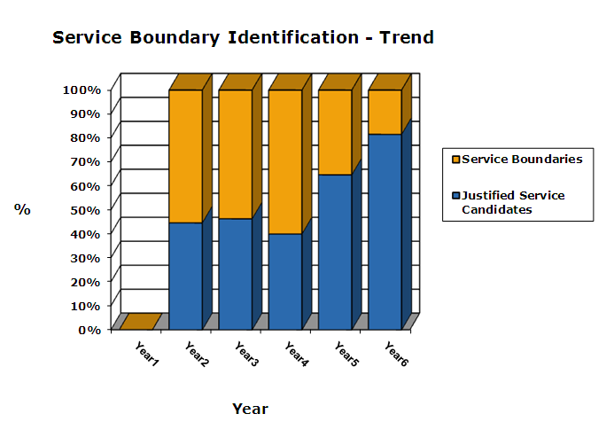
Analysis: Service Boundary Identification
Interpretation: On average there should be more service candidates than service boundaries. The optimal condition is zero service boundaries. If a relatively high number of service boundaries are being encountered then service candidates are being presented in a format that is too course grained. Getting the granularity of service candidates correct is important. The service justification process works on service candidate data, so if service candidates are being approved which result in many service boundaries then a review of the service justification process may be necessary.
If high numbers are being encountered in this metric, then it may be beneficial to look at reuse levels. If reuse levels are low, in contrast to high service boundary levels, then there is definitely a need to tighten the processes around service candidate identification.
If reuse levels are high in relation to high service boundary levels, then even though course grained candidates are being presented, the services output through delivery still appear to be contributing to the SOA. Therefore this trend should be closely monitored, but no action may be required.
Further, if it is determined that service candidates are too course grained, then the next metric will be useful in determining the primary reasoning trend associated with identified service boundaries. This information may be useful in isolating the area or areas that may need to be addressed with respect to service candidate granularity.
The Service Boundary Reason metric is depicted below:
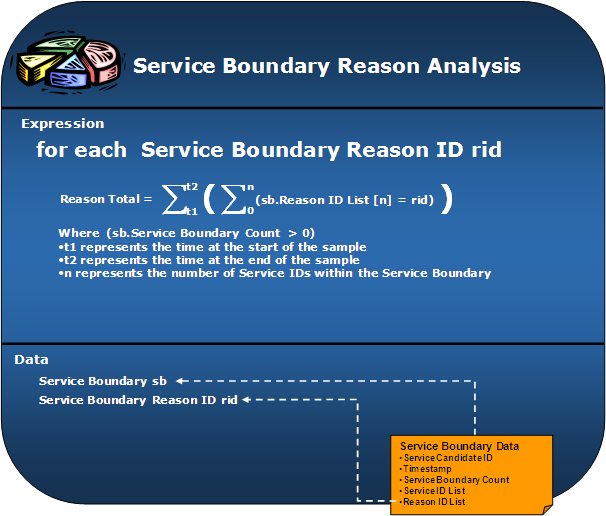
Service Boundary Reason Metric
Purpose: This metric provides a summary of totals based on reasons for service boundary creation. The metric data is sampled over a specific period of time which allows the timeframe to be narrowed accordingly. Typically this metric is used for follow-on analysis based on data observed in other metrics (such as the previous metric: Service Boundary Identification). The reasons for identifying service boundaries are as follows:
Computation: This metric is computed by creating a total for each general service boundary reason. Service boundaries are filtered based on the timeframe provided as input to the metric.
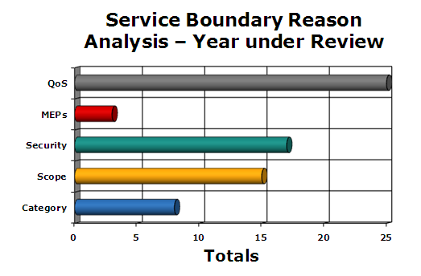
Analysis: Service Boundary Reason
Interpretation: A high-number of service boundaries being attributed to any particular reason warrants a closer look. The following provides a summary by reason:
The main exception here is when composite services are being defined during service definition. This does mean that a fairly course grained candidate was presented; however, the additional services created are there to increase flexibility and still service the consumer through the high-level composite service.
The Service Architecture Conformance metric is depicted below:
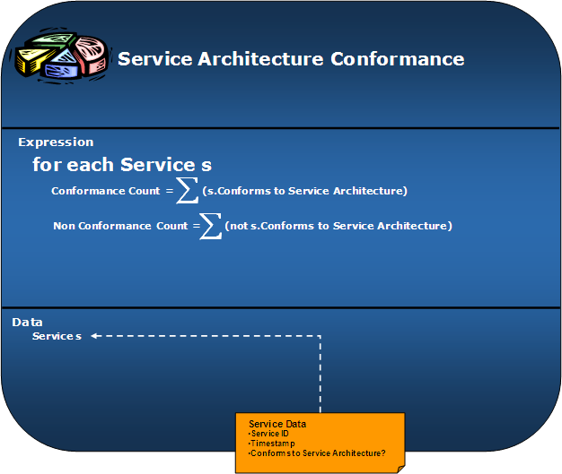
Service Architecture Conformance Metric
Purpose: This metric measures the amount of exceptions with respect to the Service Architecture (part of the Reference Architecture) allowed during service delivery. Exceptions should be accepted on a case by case basis, and represent valid reasons to deviate from the reference architecture in order to meet certain conditions or overcome obstacles encountered during service delivery.
Computation: This metric simply counts the total number of conforming services at the same time as totaling the number of services that do not conform to the service architecture.
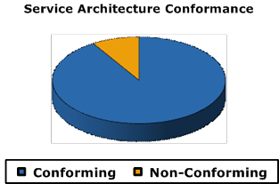
Analysis: Service Architecture Conformance
Interpretation: Obviously the lower the number of non-conforming services the better. However there are two sides to this coin. The first is that a high percentage of non-conforming services may indicate problems in the service architecture that need to be addressed. Secondly, a high percentage of non-conforming services may indicate that tightening of the delivery processes may be required; otherwise overall SOA effectiveness may be compromised. After all, the reason standards are defined in the reference architecture is to enhance SOA effectiveness and assist in assuring that the goals of the SOA are achieved.
If a high percentage of non-conforming services are identified then the following metric may be useful to help analyze the situation further.
The Service Architecture Non-Conformance Summary metric is depicted below:
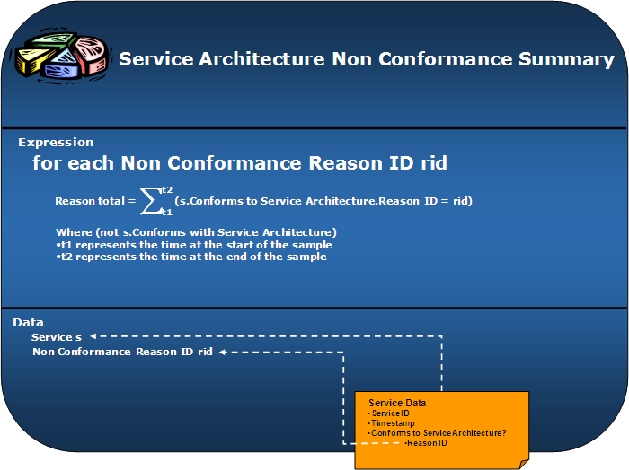
Service Architecture Non-Conformance Metric
Purpose: This metric measures the general reasoning provided for allowing a service’s delivery to deviate from the service architecture. The following reasons are possible:
Computation: This metric simply totals non-conforming services by reason id. The services counted are limited to the provided time parameters to allow for isolation in the data.
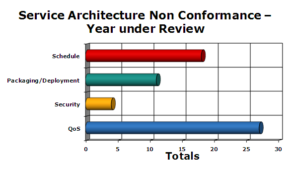
Analysis: Service Architecture Non-Conformance
Interpretation: The following provides a summary by reason:
The Service Architecture Conformance Trend metric is depicted below:
Service Architecture Conformance Trend Metric
Purpose: This metric computes the trend with respect to service architecture conformance with respect to services created via the Service Delivery process. If an unacceptable level of non-conformance was detected through the previous two metrics, and adjustments were made, then this metric may be utilized to measure progress in decreasing non-conformance.
Computation: This metric simply computes the number of conforming and non-conforming services over a sampled time set.
Analysis: Service Architecture Conformance Trend
Interpretation: A trend of decreasing non-conformance percentage is always desirable. If this trend is not observed then additional analysis, and further refinement to the overall Service Engineering Framework processes may be necessary in order to achieve acceptable results.
Refer to the section, Define Metric Notation Standards for an explanation of the notations used in the metrics.
The following metrics have been defined based on data instrumented from the Service Management processes of the SOA engineering processes within OUM. The processes covered in Service Management include:
The Production Defects - Trend metric is depicted below:
Production Defects - Trend Metric
Purpose: This metric provides a measurement of the level of defects and there severity encountered after a service has been deployed to production. This provides for analysis to be done against the level of quality being achieved through the service factory.
Computation: This metric simply totals the production defects encountered against services in production by severity. The results are grouped by sample as well.
Analysis: Production Defects - Trend
Interpretation: Obviously keeping production defects to a minimum is optimal. Any large number of defects encountered against production services hinders the efforts of the SOA and leads to a lower level of trust between the SOA and its consumers. The severity of defects encountered is also an indicator worth observing. If a large number of high-severity defects are being encountered against production services then a closer look at the testing strategy and processes are definitely in order. The following metric provides additional information regarding the general root cause of the defects which may lead to a better understanding of where improvements are necessary.
The Production Defects – Summary metric is depicted below:
Production Defects - Summary Metric
Purpose: This metric provides a measurement of the level of defects and there root cause reason, encountered after a service has been deployed to production. This provides for analysis to be done against the level of quality being achieved through the service factory and the type of defects being encountered in production. The following general root cause reasons are measured for defects:
Computation: This metric simply totals the production defects encountered against services in production by reason (generalized by root cause). The results are grouped by sample as well.
Analysis: Production Defects - Summary
Interpretation: The following provides a summary by reason:
The Defects by Environment – Summary metric is depicted below:
Defects by Environment - Summary Metric
Purpose: This metric provides a measurement of where defects against services are being encountered. This provides an overall effectiveness gauge for test.
Computation: This metric simply totals the defects encountered against services by the environment they were encountered in. The results are grouped by sample as well.
Analysis: Defects by Environment - Summary
Interpretation: The ideal situation is to identify defects in the testing cycle as early as possible; which is preferably before the service reaches production. A high number of production defects and even UAT defects indicate that additional testing discipline may be required.
The Service Delivery Schedule Conformance - Trend metric is depicted below:
Service Delivery Schedule Conformance - Trend Metric
Purpose: This metric provides an overall performance indicator with respect to service factory efficiency. It uses delivery schedule conformance as the leading indicator.
Computation: This metric is computed by iterating over all services delivered in the time frame provided within each sample. For each service encountered, the appropriate count is incremented based on whether the service was delivered on-time (within one week of scheduled delivery), ahead of schedule (earlier than one week), or behind schedule (later than one week). Obviously, the tolerance of one week may be tailored for each SOA.
Analysis: Service Delivery Schedule Conformance - Trend
Interpretation: Obviously, a large number of services delivered behind schedule have a number of negative impacts with respect to SOA:
If a trend of decreasing performance is noticed then a number of different areas should be examined. The first area to look at would be release planning impacts (see metric: Release Plan Impacts) which may lead to determining the need to expand service delivery capacities.
The Project Delivery Schedule Conformance - Trend metric is depicted below:
Project Delivery Schedule Conformance - Metric
Purpose: This metric provides an overall performance indicator with respect to project delivery efficiency. It uses delivery schedule conformance as the leading indicator.
Computation: This metric is computed by iterating over all projects delivered in the time frame provided within each sample. For each project encountered the appropriate count is incremented based on whether the project was delivered on-time (within one week of scheduled delivery), ahead of schedule (earlier than one week), or behind schedule (later than one week). Obviously the tolerance of one week may be tailored for each SOA.
Analysis: Project Delivery Schedule Conformance - Trend
Interpretation: Obviously, a large number of projects delivered behind schedule have a number of negative impacts with respect to SOA:
If a trend of decreasing performance is noticed then a number of different areas should be examined. The first place to look is the service delivery efficiency (see metric: Service Delivery Schedule Conformance - Trend). Service factory inefficiency may be causing project impacts. The second area to look at would be release planning impacts (see metric: Release Plan Impacts) that may lead to determining the need to expand project and/or service delivery capacities.
There are no templates available to assist with this technique.
This technique is recommended for use in the following OUM tasks:
| Task | Usage |
|---|---|
| Use this technique to assist in adopting instrumentation for the purpose of monitoring and management of the service engineering processes. |
Use the following criteria to check the quality of this technique:

Copyright © 2006, 2016, Oracle and/or its affiliates. All rights reserved.